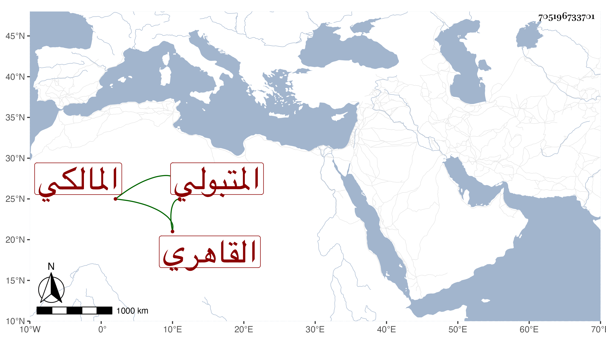

0902Sakhawi.DawLamic.ITO20230111-ara1.EIS1600.705196733701
Biography ID: 705196733701
652
أحمد بن موسى بن نصير بالتكبير الشهاب المتبولي ثم القاهري المالكي . ولد بعد الخمسين وسبعمائة وسمع من محمد بن المحب عبد الله بن محمد بن عبد الحميد بن عبد الهادي منتقى المزي من جزء أبي حامد الحضرمي ومن البياني صحيح البخاري ومن البدر بن الجوخي وعبد الرحمن بن خير والتلبنتي في آخرين ، وأجاز له محمد ابن أزبك وزغلش والزيتاوي وابن أميلة والصلاح وغيرهم ، وتعاني الشروط وتقدم في الوثائق وكتب الخط الحسن وهو الذي كتب وقف الجامع المؤيدي بل ناب في الحكم ثم لما كبر وضعف أعرض عنه وحدث بالصحيح وغيره غير مرة وممن سمع منه شيخنا وابن موسى والكاوتاتي والعلاء القلقشندي والأبي . وأبو البركات بن عزوز التونسي والمحيوي الطوخي والبدر الدميري وآخرون وتغير قبل موته . مات في ثاني ربيع الأول سنة ثلاثين وقد جاز الثمانين وأرخها بعضهم في يوم الأربعاء رابع عشريه وقال عن خمس وثمانين سنة . ذكره شيخنا في معجمه باختصار وبيض له في إنبائه ، وأما العيني فقال له يد طولى في صناعة التوقيع وباشرها عند القضاة مدة ثم ناب عن المالكية في القضاء ولم يكن مذموم السيرة بل كان يقال أنه يأخذ الأجرة الكثيرة على الكتابة .
